November 29, 2022
Analyse av egen side
For at siden skal følge de generelle prinsippene så må vi passe på at UU og SEO blir fulgt med, sammen med en heuristisk evaluering og PWC så kan User Experience på siden bli effektiv, bra, tålmodig og fint. Her skal vi se eksempler på problemer som kan oppstå og kan fikses ved hjelp av verktøy som Lighthouse, WAVE og andre typer verktøy.
Eksempeler på resultaterVed å bruke Lighthouse verktøyet på "Hjem" siden for desktop får vi opp en evaluering på 5 kriterier; Performance, Accessibility, Best Practises, SEO og PWA på bildet nedenfor.
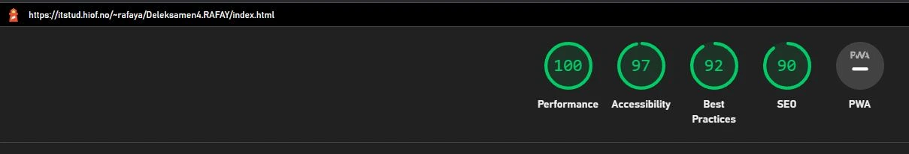Hvis vi da prøver å analysere "Hjem" siden på mobil, får vi følgende nedenfor.
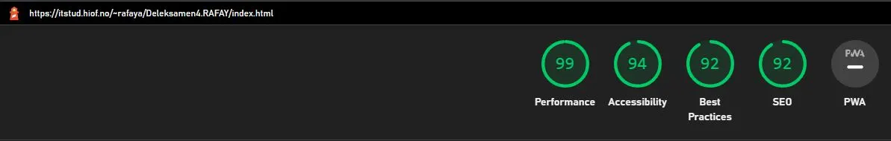Nå skal vi se eksempel på en av resultatene for UU vs SEO innholdssiden, både på desktop og mobil versjon. Starter med å analysere ved hjelp av samme verktøyet, Lighthouse. Bildet nedenfor viser frem desktop versjonen.
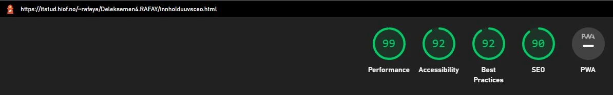Og her er resultatet for mobilversjonen nedenfor.
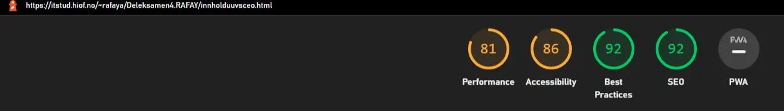Man ser litt forskjell på vurderingene for alle. Merk at vurderinger på de 5 kriteriene kan variere avhengig av hvor kjapt filer, bilder og ting laster ned på siden. Om det mangler en alt=" " tag, dårlig kontrast med tekst og bakgrunn, ikke crawlable link, ingen aria-label, osv.
Eller noen ubrukte JavaScripts, eller bilder med for høy KiB Size. Derfor er det lurt å se hva som fører til treghet. Merk at noen extensions som f.eks AdBlock kan forstyrre analyseringen. Derfor er det viktig at man ser på resultatene, prøver å oppnå bra vurdering og fikse det som er mulig. Å ha grønt på alle de 5 kriteriene er ikke en stor krav, men det er nyttig å få en bra vurdering fordi hele prinsippet er å få siden din til å bli enda bedre. Tross alt, så vil man at brukere skal få en bra opplevelse på siden - det er penger vi snakker om her.
Nå skal vise bruke en annen verktøy som heter WAVE, der viser det generelle UU og SEO prinsipper på siden. Vi viser frem den som er analysert for "Hjem" siden nedenfor.
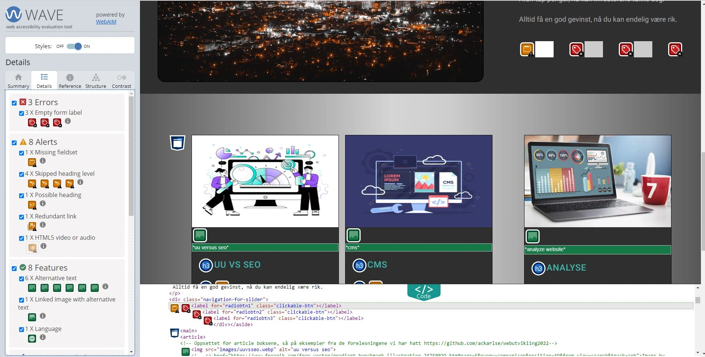Det er sånn en vanlig oppsett av WAVE ser ut. Vi kan se det er 3 error og 8 advarsler på "Hjem" siden, som mesteparten dreier seg om; heading ikke er i en sekvens rekkefølge, mangler "form label", mangler fieldset og at 2 av "kontakt oss" linken er ved siden av hverandre. Det som er error er det mest nødvendige å fikse, de med advarsler kan man velge om man vil. Det er selvom anbefalt å få 0 feil på alt uansett. Bildet nedenfor viser frem det som er analysert for "Kontakt" siden.
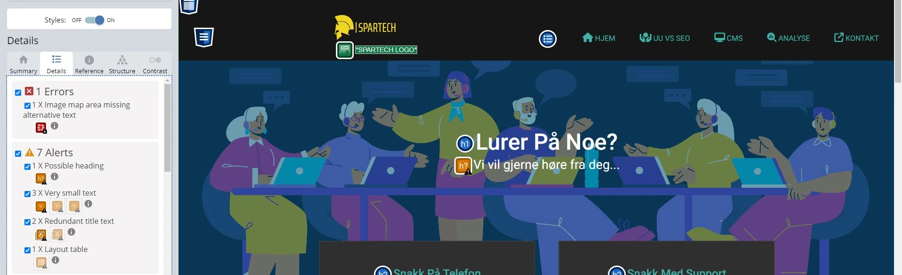Her ser vi det er 1 error og 7 varslinger, det fleste dreier seg om manglende "alt" tekst, manglende header tekst og altfor liten skriftstørrelse. Det var også kontrast problemer, men ble fikset før bildet ble tatt.
Forbedring av performanceNå skal vi gå over feil som dukket opp under analysering av sidene. "Performance" er lurt å fiske på for å ha en god brukeropplevelse. Så lenge man er på oransje eller grønn farge av vurderingen, trenger man da ikke å bekymre seg så ille. Det er lurt å prøve det beste man kan, og det man har tilgang til. Bildet nedenfor viser feilene som oppstå for alle sider, både på desktop og mobil.
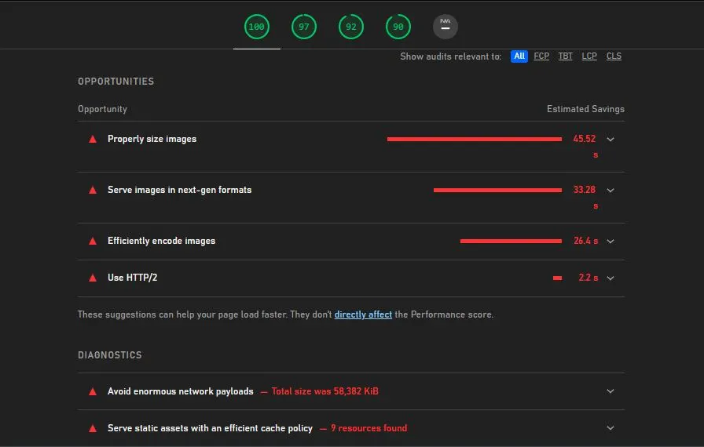Vi ser at "Properly size image" er det som gjør at nettsiden laster inn alt tregest, deretter kommer "images in next-gen formula". "Images in next-gen formula" kan lett fikses ved å konvertere alle bilder format (PNG, JPG) til Webp format, det finnes mange gratis konverteringer.
"Properly sized images" kan fikses av å legge til bilder som er riktig størrelse. Siden mange av bildene har forskjellige størrelser, så er det ikke mulig å endre på alle bildene uten at nettsiden ser dårlig ut.
Forbedring på accessibilityI denne seksjonen skal vi gå gjennom alle de feilene som oppstår i "Accessibility". Vi skal se hva som hindrer en perfekt 100 vurdering. Starter med heading problemet som både Lighthouse og WAVE sier ikke er i orden.
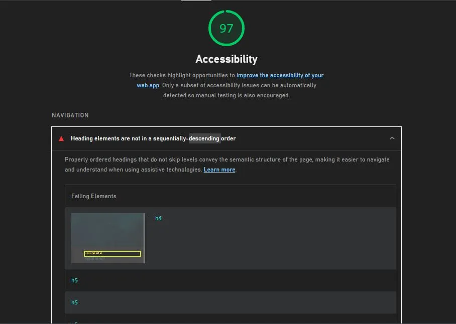Dette ble fikset av å gjøre alle heading elementer i sekvens rekkefølge. På "Hjem" skrev jeg koden i h1, h2, h3 osv, i rekkefølge. Dette gjelder også for de artikkelkortene på "Hjem" siden og de andre innholdssidene inkluder "Kontakt" siden. Nå som det er gjort, la oss gå over til neste problem som er kontrast på bildet under.
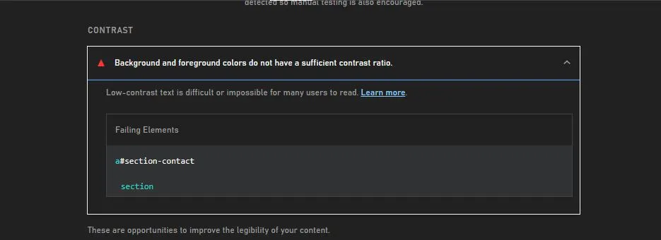Denne feilen oppstår generelt på alle de artikkel sidene. Det samme feilen kom også på "Hjem" siden og "Kontakt" siden, men ble rettet på før bildet over ble tatt. Helt åpenbart så måtte bakgrunnen være mørkere en teksten, eller teksten være lysere enn bakgrunnen. En veldig lett AAA-krav.
I avsnitten om resultater ble det nevnt at WAVE ble også brukt for testing og analyse. En av feilene som dukket opp var at det ikke var noe "form label" for de knappene for bilde slider. Bildet under viser koden.
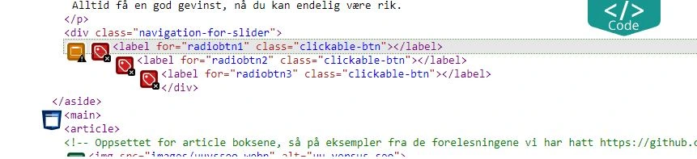Dette ble fikset av å lage span class="hidden-text" innenfor label tagen, deretter skrive noe ord eller tekst som vist her span class="hidden-text">Carousel toggle left/span. Man må også huske på å legge in verdier for å hjemme teksten, kode eksempel kan man se her; https://stackoverflow.com/questions/71369244/empty-form-label-a-form-label-is-present-but-does-not-contain-any-content.
En annen feil som dukket opp var i "Kontakt" siden. WAVE verktøyet sier at Google Maps API kartet har en tom alt=" " tag som vist under.
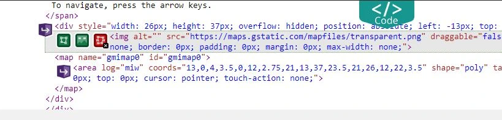Problemet er at det ikke er noe tilgang til den koden der feilen oppstår siden det er en API. Alt=" " tag er der, men det er ikke definert. Men denne feilen ødelegger ikke så mye av SEO og UU. Dette er skyldes på Google Maps API.
Den siste feilen som manglet for "Accessibility" var at hamburger menyen ikke har en "discernible name" som vist på bildet nede.
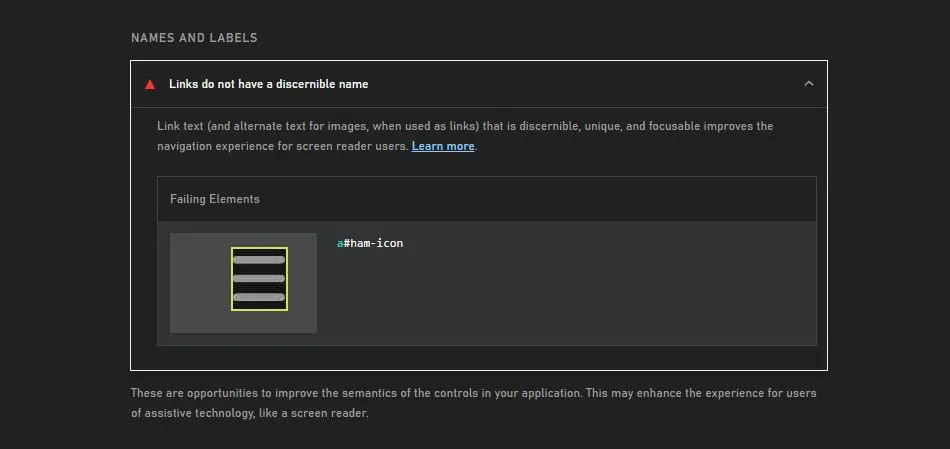Dette ble fikset ved å bruke en tag som heter aria-label=" ". Tagen aria-label="hamburger icon" ble lagt inne href="#" id="ham-icon" onclick="hamMenu()" linjen.
Forbedring på best practisesI denne seksjonen ble det 2 feil som egentlig ikke er mulig å fikse uten at det endrer mye av siden. Vi starter på den første feilen som er "display ratio" på bildet nedenfor.
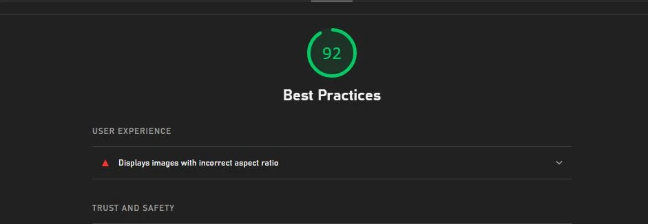Dette oppstår når størrelsen (bredden og høyden) på bildet er annerledes enn det originalet er. På grunn av hele nettsiden her bruker artikkelkort med bilder, logo på meny, og bilde som bakgrunn så kommer "display ratio" til å ikke være lik det originalet er. Hvis alle bildene fikk en definert verdi på høyde og bredde, så hadde hele siden vært rart dersom man forstørrer eller minsker skjermen. Og bildene hadde heller ikke passet på den måten siden skal være utforma.
La oss ser over den andre feilen som oppstår og som ikke er mulig å fikses på. Det er nemlig "browser error" og skjer kun på "Kontakt" siden. Bildet nedenfor viser eksemplet.
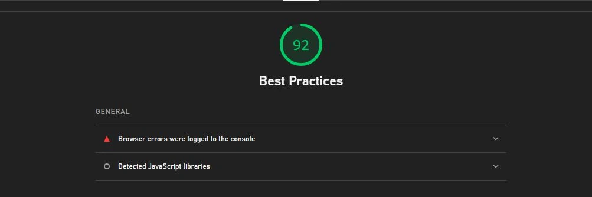Dette oppstår på grunn av at Google Maps API blir brukt på "Kontakt" siden, noen ganger oppstår det en feil med serveren eller API. Denne beskjeden gis bare når det er en "console error". Det eneste fiksbare metoden er å erstatte koden med noe annet, finne en annen API eller bare la det gå. Google Maps API fungerer, men det kan noenganger oppstå treig nedlastning av kartet. Så man må bare gjenopprette siden.
Forbedring på SEOSEO er viktig for at Google og andre search engines skal elske deg. Her ble den bare en feil, altså "links are not crawlable" og den feilen var egentlig ganske lett å løse ut. Bildet nede viser eksemplet.
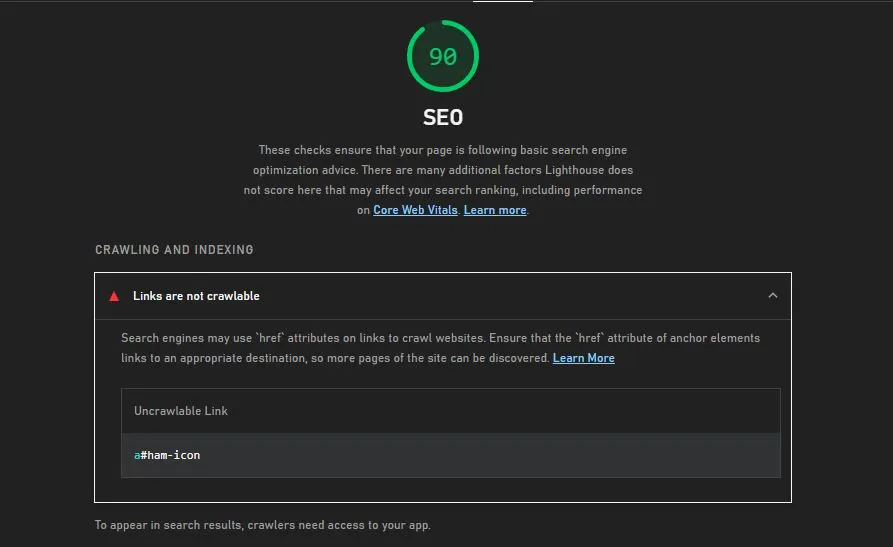Koden for den feilen er; a href="javascript:void(0)" id="ham-icon" aria-label="hamburger icon" onclick="hamMenu(). Feilet dukket opp på grunn av at javascript:void(0) ikke er en link som Google kan finne frem. Den linjen betyr altså null, men Google vet ikke det. Så det måtte bli endret til a href="#" istedet. Kode linjen blir da a href="#" id="ham-icon" aria-label="hamburger icon" onclick="hamMenu().
Progressive Web AppProgressive Web App (PWA) er en type moderne API som er ment for å installere innstillinger og funksjoner kjapt på siden og føre til bra opplevelse for alle brukere, hvor som helst. Det er ikke en krav om å ta med det, men det skader ikke å legge til ekstra funksjoner. Bildet nedenfor viser eksempel på PWA resultat på alle sidene.
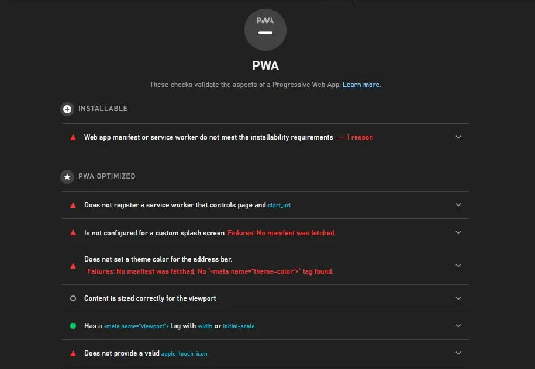Vi kan prøve å legge til en PWA funksjon for å gjøre brukeropplevelsen litt bedre, nemlig "apple-touch-icon" for iOS brukere. Hvis man lager en fil ikon (kan brukes favicon) og kaller det for "apple-touch-icon.png". Deretter skriver vi link rel="apple-touch-icon" href="images/apple-touch-icon.png" inne i head, så kommer den ikonet for iOS brukere.
De andre ekstra funksjonene kreves en "Manifest" fil, i .json format. Siden det ikke er en krav, så tenker vi ikke å gjøre det. Om man er nysgjerrig, så kan man lese mer her https://developer.chrome.com/en/docs/lighthouse/pwa/installable-manifest/.
Resultater etter forbedringEtter en lang analyserings prosess og forbedring av alle de 5 kriteriene både på desktop og mobil, så skal vi se hva Lighthouse viser oss. Merk at bildene nedenfor gjelder for hver side selv om det ble testet på "Hjem" siden. Også, merk at "Good Practices" vurdering går ned siden Facebook og Twitter del knappene ble lagt til etter alt ble forbered, de to knappene har problemer med API og scripts.
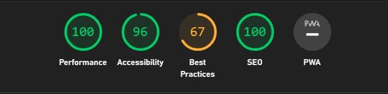Vi ser at "SEO" og "Accessibility" fikk mest endring. Dem er på 100 vurdering som er veldig bra. Dette er god for både UU og SEO i sammenheng. La oss se evalueringen på mobil versjonen nede.
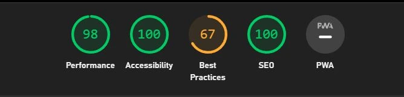Samme verdi, som betyr det er fikset. Alle sidene har det samme kriterier verdi. Nå la oss se på WAVE sin evaluering på "Hjem" siden nedenfor.
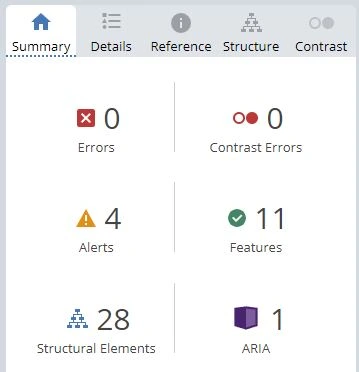Fortsatt noen advarsler som ikke kan gjøres så mye med, men disse advarslene ødelegger ikke så mye av nettsiden. Dette konkluderer med at så lenge man analyserer siden sin, og prøver å få de beste vurderingene som er mulig. Så kan man oppnå gode resultater og gi en god brukeropplevelse.
Feil og Løsning Tabell